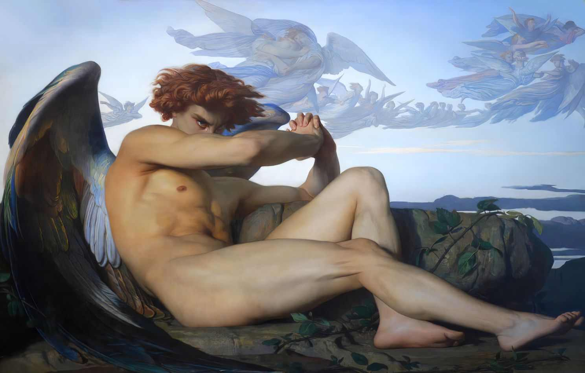

Fonte: https://pt.quora.com/Qual-é-o-significado-da-pintura-de-Alexandre-Cabanel-O-Anjo-Caído#:~:text=A%20pintura%20é%20uma%20representação,da%20escolha%20errada%20de%20Lúcifer.

Nesta visão, Lúcifer pode ser visto como uma alma que ainda está em processo de evolução, e a queda do céu representa um momento em que essa alma precisa aprender uma lição importante na Terra.
A expressão sombria e ressentida de Lúcifer pode ser vista como uma reação à reencarnação compulsória, mas também como um sinal de que essa alma está prestes a experimentar um novo aprendizado.
ANJO CAÍDO: Esta pintura é guardado vivo no musée fabre , Na frança.
A pintura representa Lúcifer colocado em uma posição quase supina para indicar que ele acabou de cair do céu (como pode ser adivinhado pelo próprio título da pintura).
Provavelmente a referencia mais conhecida é da nova do do League of legends conhecida como arcane, mas teve outro filme que usou essa pintura como base para representar a dor do personagem como a da anakin de star wars.
A pintura mais importante e mais notavel do pintor alexandre canbanel é "O nascimento de Venus" em 1863.
Veja o link abaixo para saber mais sobre.
Link do video